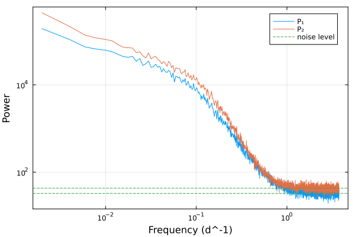
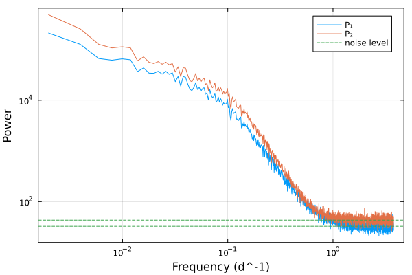

Simulating delayed time series
Let's simulate two time series with a delay
using Tonari
using Random
using Plots
using StatsBase
rng = MersenneTwister(42)Random.MersenneTwister(42)Let's define the individual power spectral densities and the phase delay. We will use two bending power laws and a constant time delay.
p1 = SingleBendingPowerLaw(1.0, 0.63, 10e-2, 3.22)
p2 = SingleBendingPowerLaw(1.0, 0.78, 13e-2, 3.81)
Δϕ = ConstantTimeLag(12.35)ConstantTimeLag(12.35)The cross-spectral density is defined by the two power spectral densities and the phase delay.
cs = CrossSpectralDensity(p1, p2, Δϕ)CrossSpectralDensity(SingleBendingPowerLaw{Float64}(1.0, 0.63, 0.1, 3.22), SingleBendingPowerLaw{Float64}(1.0, 0.78, 0.13, 3.81), ConstantTimeLag(12.35))We can now simulate the time series using the Simulation type.
T, Δt = 504.2, 0.133
simu = Simulation(cs, T, Δt)Simulation{CrossSpectralDensity, Float64, Float64, Float64, Float64}(CrossSpectralDensity(SingleBendingPowerLaw{Float64}(1.0, 0.63, 0.1, 3.22), SingleBendingPowerLaw{Float64}(1.0, 0.78, 0.13, 3.81), ConstantTimeLag(12.35)), 504.2, 0.133, 10.0, 10.0, 0.0:0.133:503.937)and sample 50 time series.
t, y, yerr = sample(rng,simu,50,error_size=0.15)([0.0, 0.133, 0.266, 0.399, 0.532, 0.665, 0.798, 0.931, 1.064, 1.197 … 502.74000000000007, 502.87300000000005, 503.00600000000003, 503.13900000000007, 503.27200000000005, 503.40500000000003, 503.53800000000007, 503.67100000000005, 503.80400000000003, 503.937], Any[[-0.759915441211299 0.06557150352578534 … -0.1462045190145622 0.21553048426984725; -0.70132037880538 0.17220045405476647 … -0.2611416132530056 0.10205261993859913; … ; 0.009563560951726223 -0.6159168429900939 … 0.5114416184357494 0.3866435546923351; 0.01917453141330202 -0.634076139857394 … 0.6164014328954742 0.2817792283694581], [-0.22822150261370788 -0.15944042425414123 … 0.40434053889490484 -1.064656392508735; -0.1978760541368298 -0.177426250454357 … 0.4239265445890495 -0.6428115418163081; … ; -0.30833497266367466 -0.2760993986391587 … -0.6936552606924923 -0.9570563101573051; -0.29119662167984395 -0.7158575919907144 … -0.20702001911819684 -0.9461289836260097]], Any[[0.1387614020615377 0.10896530858723039 … 0.08656584637237384 0.03373430538152427; 0.0469802457221938 0.04752121451622339 … 0.05961374455069441 0.03669037593095518; … ; 0.0028473674821955022 0.1331213594381661 … 0.13841260955077958 0.09733466573932743; 0.04565356654984277 0.01972631829782211 … 0.042981054976604816 0.018029441836269287], [0.05571602841036295 0.05884716416673912 … 0.03856069003612728 0.23080637485422384; 0.03960117894210755 0.01948108094282577 … 0.02134286922369097 0.11826234668290694; … ; 0.03718975392444956 0.2547008608128546 … 0.0236137973644295 0.048236529703082814; 0.038997272683725936 0.018107431945749913 … 0.30200689423797183 0.009001291361902848]])scatter(t,y[1][:,1],yerr=yerr[1][:,1],label="1", framestyle=:box)
scatter!(t,y[2][:,1],yerr=yerr[2][:,1],label="2", framestyle=:box, xlabel="Time (days)", ylabel="Value")
The cross periodogram can be computed using the cross_periodogram function. γ² is the coherence, Δφ the phase difference and Δτ the time delay.
f, γ², γ²_corrected, Δφ, γ²_err, γ²_corrected_err, Δφ_err, Δτ, Δτ_err, P̄₁, P̄₂, N₁, N₂, n = cross_periodogram(t, y[1], y[2], yerr[1],yerr[2])([0.0019838514492034835, 0.003967702898406967, 0.00595155434761045, 0.007935405796813934, 0.009919257246017417, 0.0119031086952209, 0.013886960144424384, 0.015870811593627868, 0.01785466304283135, 0.019838514492034835 … 3.74154383319777, 3.743527684646973, 3.745511536096177, 3.74749538754538, 3.7494792389945837, 3.7514630904437873, 3.7534469418929906, 3.755430793342194, 3.757414644791398, 3.759398496240601], [0.9892391776018118; 0.9747570968276863; … ; 9.446332109199442e-5; 0.04832278060211113;;], [0.9894958320880055; 0.9752281775299694; … ; 3.422811595543651; 5.378272913468458;;], [0.1014486305557113; 0.2772678912041724; … ; 0.6051791964728364; 3.141592653589793;;], [0.002140553629710322; 0.004984452939453324; … ; 0.0019436612389699738; 0.041840380709547424;;], [0.046769403335263963; 0.07242899476055399; … ; 466.7207518688207; 5.857577771476757;;], [0.0010819191547283909; 0.0025567666835538084; … ; 10.287915015591672; 0.4329260463513092;;], [8.138739939085452; 11.121940471784695; … ; 0.0256339184467038; 0.133;;], [0.08679721537112267; 0.10255860038906633; … ; 0.4357710510099028; 0.018328017191831136;;], [193779.10806755387; 109931.78853524695; … ; 36.26843229270495; 38.41149569042716;;], [446734.0735616687; 219080.3671213632; … ; 40.49895396521953; 44.481172120244985;;], 32.692752601949, 42.90193292971983, [458341.24522056466; 237544.47757093565; … ; 29.54851705787233; 33.99114175992139;;])The individual periodograms can be plotted:
plot(f,P̄₁,label="P₁")
plot!(f,P̄₂,xscale=:log10,yscale=:log10,label="P₂",xlabel="Frequency (d^-1)",ylabel="Power")
hline!([N₁,N₂],linestyle=:dash,label="noise level", framestyle=:box)
The coherence and the phase difference can be plotted as a function of the frequency:
l = @layout [a; b]
p1 = scatter(f, γ²_corrected, yerr=γ²_corrected_err, label="γ² corrected",marker=:square,ms=4,xscale=:log10,size=(800,400))
p1 = scatter!(f, γ², yerr=γ²_err, label="γ²", xscale=:log10,ylims=(0,1.1),ms=4,ylabel="Coherence",link=:x, framestyle=:box)
p2 = scatter(f, Δτ, yerr=Δτ_err, xscale=:log10, ylabel="Time delay (d)",xlabel="Frequency (d^-1)",link=:x, framestyle=:box,label=nothing)
p2 = hline!([Δϕ.Δτ ],color=:black,label="True delay")
plot(p1, p2, layout=l,size=(800,600))
With a constant phaselag
p1 = SingleBendingPowerLaw(1.0, 0.63, 10e-2, 3.22)
p2 = SingleBendingPowerLaw(1.0, 0.78, 13e-2, 3.81)
Δϕ = ConstantPhaseLag(56.2,5*1/T)
cs = CrossSpectralDensity(p1, p2, Δϕ)CrossSpectralDensity(SingleBendingPowerLaw{Float64}(1.0, 0.63, 0.1, 3.22), SingleBendingPowerLaw{Float64}(1.0, 0.78, 0.13, 3.81), ConstantPhaseLag(56.2, 0.009916699722332408))T, Δt = 504.2, 0.133
simu = Simulation(cs, T, Δt)Simulation{CrossSpectralDensity, Float64, Float64, Float64, Float64}(CrossSpectralDensity(SingleBendingPowerLaw{Float64}(1.0, 0.63, 0.1, 3.22), SingleBendingPowerLaw{Float64}(1.0, 0.78, 0.13, 3.81), ConstantPhaseLag(56.2, 0.009916699722332408)), 504.2, 0.133, 10.0, 10.0, 0.0:0.133:503.937)t, y, yerr = sample(rng,simu,50,error_size=0.15)([0.0, 0.133, 0.266, 0.399, 0.532, 0.665, 0.798, 0.931, 1.064, 1.197 … 502.74000000000007, 502.87300000000005, 503.00600000000003, 503.13900000000007, 503.27200000000005, 503.40500000000003, 503.53800000000007, 503.67100000000005, 503.80400000000003, 503.937], Any[[-0.19571182522936173 0.20458236198166777 … 0.03413116175019648 -0.278517265336005; -0.2884414658720273 0.17425574463925594 … 0.05902054013215286 -0.5227412939320722; … ; 0.6074633811817992 0.4147705907671915 … -0.055430652350073106 0.7366276865410889; 0.6630461001860211 0.22171712591892037 … -0.08821450480985084 0.9283457139101413], [0.49869644806863694 -0.5634548066912535 … -0.10254041964830395 0.33781131793500496; 0.6344948287083987 -0.5601754443237846 … -0.18670564224868824 0.3360482516581158; … ; -1.2733594236101557 -0.32974314149828593 … -0.15659764200600523 -0.6700155855567075; -1.2395620739241362 -0.3127471848740764 … -0.11293453288662772 -0.6060355974918962]], Any[[0.08206574423210344 0.05256314220666787 … 0.012202430844113604 0.05395692855276908; 0.05444106918360425 0.008844309808672735 … 0.025258182741456 0.10565782059332608; … ; 0.052481070146572086 0.055255158362870836 … 0.037831413566320436 0.2129913039863272; 0.002557751735249196 0.11715104767698883 … 0.023622344241152487 0.16861474693245332], [0.19821870849280665 0.11371222718646817 … 0.03736306626923669 0.05533866511454598; 0.04073057606030442 0.013977806665922052 … 0.048625831316368565 0.08235645943628282; … ; 0.1334134791037769 0.03805503237887245 … 0.07148516320013285 0.04084274339005265; 0.018992995807837677 0.018545268491110007 … 0.0027914596136851735 0.003519589073814119]])scatter(t,y[1][:,1],yerr=yerr[1][:,1],label="1", framestyle=:box)
scatter!(t,y[2][:,1],yerr=yerr[2][:,1],label="2", framestyle=:box, xlabel="Time (days)", ylabel="Value")
f, γ², γ²_corrected, Δφ, γ²_err, γ²_corrected_err, Δφ_err, Δτ, Δτ_err, P̄₁, P̄₂, N₁, N₂, n = cross_periodogram(t, y[1], y[2], yerr[1],yerr[2])([0.0019838514492034835, 0.003967702898406967, 0.00595155434761045, 0.007935405796813934, 0.009919257246017417, 0.0119031086952209, 0.013886960144424384, 0.015870811593627868, 0.01785466304283135, 0.019838514492034835 … 3.74154383319777, 3.743527684646973, 3.745511536096177, 3.74749538754538, 3.7494792389945837, 3.7514630904437873, 3.7534469418929906, 3.755430793342194, 3.757414644791398, 3.759398496240601], [0.9777223919921655; 0.9841953545300931; … ; 0.013019732037445088; 0.00881585648502278;;], [0.9779559461399172; 0.9846072847428732; … ; 19.876458355062088; 0.49888434672319815;;], [-2.822882581469167; -2.8115850148335886; … ; -1.5311791550753502; 0.0;;], [0.00440561289247961; 0.003135850929627333; … ; 0.022523687275512228; 0.01861300942493076;;], [0.06788715957209128; 0.05689793851105347; … ; 21.439823068640354; 15.730429851417346;;], [0.00225299784916602; 0.0015931039072647082; … ; 0.8649827512092229; 1.0556551967782326;;], [-226.4664104710119; -112.78003028239031; … ; -0.06485702386541986; 0.0;;], [0.18074727551508393; 0.06390356541110759; … ; 0.03663856495982168; 0.04469138957626225;;], [211203.40993801047; 126719.27737734259; … ; 32.41231554814053; 27.54604498230689;;], [484924.18180724466; 255328.12851976755; … ; 45.1307178454363; 49.39292264108176;;], 32.67897946880365, 43.20235682008996, [499398.01300070976; 276340.44596027845; … ; 29.266105840637028; 27.84710875344679;;])plot(f,P̄₁,label="P₁")
plot!(f,P̄₂,xscale=:log10,yscale=:log10,label="P₂",xlabel="Frequency (d^-1)",ylabel="Power")
hline!([N₁,N₂],linestyle=:dash,label="noise level", framestyle=:box)
l = @layout [a; b ; c]
p1 = scatter(f, γ²_corrected, yerr=γ²_corrected_err, label="γ² corrected",marker=:square,ms=4,xscale=:log10,size=(800,400))
p1 = scatter!(f, γ², yerr=γ²_err, label="γ²", xscale=:log10,ylims=(0,1.1),ms=4,ylabel="Coherence",link=:x, framestyle=:box)
p2 = scatter(f, Δφ, yerr=Δφ_err, xscale=:log10, ylabel="Time delay (d)",xlabel="Frequency (d^-1)",link=:x, framestyle=:box,label=nothing)
p2 = plot!(f,Δϕ(f) .* 2 .*pi .* f )
println(Δϕ(f[1]) .* 2 .*pi .* f[1] )
p3 = scatter(f, Δτ, yerr=Δτ_err, xscale=:log10, ylabel="Time delay (d)",xlabel="Frequency (d^-1)",link=:x, framestyle=:box,label=nothing)
p3 = plot!(f,-Δϕ(f) )
plot(p1, p2,p3, layout=l,size=(800,900))